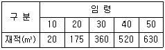

산림기사 (2013-08-18 기출문제)
1과목: 조림학
1. 토양을 형성하는 암석 중 수성암에 속하는 것은?
- 섬록암
- 편마암
- 안산암
- 혈암
(정답률: 58%)

2. 수목의 내음성과 여기에 영향을 미치는 인자와의 관계 설명으로 틀린 것은?
- 토양 수분조건이 좋아지면 내음성이 강해진다.
- 양료가 풍부하면 내음성이 강해진다.
- 온도가 높을수록 수목이 요구하는 광량은 줄어든다.
- 산 높이의 증가에 따라 그 수종의 광선요구량이 감소한다.
(정답률: 67%)
3. 풀베기용 제초제에 대하여 바르게 설명한 것은?
- 염소산염제는 선택성이며 이행형 제초제이다.
- 피클로람(picloram) ㆍ K는 호르몬형으로 흡수이행성이 큰 제초제이다.
- 시마진(simazine)은 비선택성이며 접촉형 제초제이다.
- 헥사지논(hexazinone)은 비선택성 제초제로 소나무에 약해가 심하다.
(정답률: 60%)
4. 간접적 지위평가법에 해당되지 않은 것은?
- 구간법
- 지표식물에 의한 접근
- 지위지수
- 점밀도법
(정답률: 46%)
5. 대량원소로 분류되면서 엽록소의 구성성분이 무기양료는?
- 칼슘(Ca)
- 칼륨(K)
- 마그네슘(Mg)
- 유황(S)
(정답률: 87%)
6. 밤이나 도토리 등과 함수량이 많은 전분(澱粉)종자를 추운 겨울 동안 동결하지 않고 동시에 부패하지 않도록 저장하는 방법은?
- 노천매장법
- 보호저장법
- 상온저장법
- 저온저장법
(정답률: 70%)
7. 전나무의 속명으로 맞는 것은?
- Juniperus
- Pinus
- Populus
- Abies
(정답률: 88%)
8. 삼림 작업종 분류의 기준이 아닌 것은?
- 임분의 기원
- 벌구의 크기와 형태
- 벌채종
- 갱신 임분의 수종
(정답률: 64%)
9. 소나무류(Hard Pine)와 잣나무류(Soft Pine)의 식별에 대한 설명으로 잘못된 것은?
- 잣나무류는 잎이 3~5개이고 소나무류는 2~3개이다.
- 잣나무류의 실편(實片)은 끝이 얇고 가시가 없으며, 소나무류는 실편은 끝이 두껍고 가시가 있다.
- 잣나무류는 가지에 침엽이 달렸던 자리가 도드라졌고 소나무류는 밋밋하다.
- 잣나무류의 유관속은 1개이고 소나무류는 2개이다.
(정답률: 78%)
10. 낙엽송 ㆍ 소나무류 ㆍ 삼나무 ㆍ 편백 등의 저장종자에 효과가 있는 종자발아촉진법은?
- 냉수처리법
- 고온처리법
- 종피의 기계적 가상
- 황산처리법
(정답률: 87%)
11. 묘목식재시 시비할 경우 본당 질소성분의 시비 기준량(g/본)이 가장 높은 수종은?
- 낙엽송
- 소나무
- 잣나무
- 해송
(정답률: 58%)
12. 토양단면에서 부식이 바로 위에 있는 층보다 적고 갈색 또는 황갈색을 띄며 가용성 염기류가 많고 비교적 견밀한 특징을 구비한 토양층은?
- 유기물층
- 용탈층
- 집적층
- 모재
(정답률: 69%)
13. 산벌(傘伐)작업 방법에 속하는 것은?
- 균형벌
- 단벌
- 윤벌
- 하종벌
(정답률: 93%)
14. 덩굴치기에 대한 설명으로 잘못된 것은?
- 덩굴식물에 의한 피해는 수관피복형과 수관압박형이 있다.
- 덩굴식물은 울폐된 산림지역에 많다.
- 덩굴치기의 시기는 7월경이 좋다.
- 칡은 무성생식으로도 잘 번식한다.
(정답률: 78%)
15. 건조탈출식물의 특성으로 틀린것은?
- 뿌리/지상부 비율이 작다.
- 왜소하다.
- 생활사가 짧다.
- 우기동안 개화 결실을 완성한다.
(정답률: 69%)
16. 유령림 비배의 시비법 중 식재 전에 시비하는 방법은?
- 표층시비
- 측방시비
- 식혈(植穴)토양하부시비
- 원주상 또는 반원주상 시비
(정답률: 81%)
17. 묘목 양성과정 가운데 상체작업이란 무엇인가?
- 파종상에서 기른 1~2년생 실생묘를 산지식재에 알맞게 하기 위해서 다른 묘상에 옮겨 심는 작업
- 묘목이 자라는 토양을 어느 정도 밭갈이 해주는 작업
- 묘목 생장을 돕기 위해서 비료를 주는 작업
- 잡초의 발생을 막기 위해서 하는 작업
(정답률: 90%)
18. 침엽수 채종림에 적합한 나무의 조건이 아닌 것은?
- 가지가 굵어야 한다.
- 자연 낙지가 잘되어야 한다.
- 줄기가 곧아야 한다.
- 지하고가 높아야 한다.
(정답률: 89%)
19. 평균 흉고직경이 20cm인 임분을 간벌할 때 잔존본수를 가장 많이 남겨두는 것은?
- 소나무
- 낙엽송
- 삼나무
- 편백
(정답률: 50%)
20. 식재 후 첫 번째 제벌이 실시되는 수종별 임령이 옳은 것은?
- 소나무 7~8년
- 낙엽송 10년
- 삼나무 13~15년
- 가문비나무 20~25년
(정답률: 71%)
2과목: 산림보호학
21. 진균(眞菌)의 영양기관에 해당되지 않는 것은?
- 균사
- 균핵
- 발아관
- 자낭각
(정답률: 64%)
22. 버즘나무 탄저병에 대한 설명으로 틀린 것은?
- 잎맥을 중심으로 갈색반점이 불규칙한 모양으로 생긴다.
- 봄비가 잦은 해에 피해가 심하다.
- 병든 낙엽은 모아서 태우거나 땅속에 묻는다.
- 어린잎만 부분적으로 말라죽는다.
(정답률: 77%)
23. 다음 해충 중 충영형성 해충이 아닌 것은?
- 밤나무혹벌
- 솔노랑잎벌
- 아까시잎혹파리
- 솔잎혹파리
(정답률: 80%)
24. 유효성분이 물에 녹지 않으므로 유기용매에 유효성분을 녹여 만드는 농약은?
- 유제(乳劑)
- 액제(液劑)
- 수용제(水溶劑)
- 수화제(水和劑)
(정답률: 88%)
25. 약제를 식물체의 뿌리, 줄기, 잎 등에 흡수시켜 깍지벌레와 같은 흡즙성 곤충을 죽게 하는 살충제는?
- 기피제
- 유인제
- 소화중독제
- 침투성살충제
(정답률: 84%)
26. 수목의 질병을 예방하기 위한 위생무육에 해당되지 않는 것은?
- 예초
- 가지치기
- 제벌
- 개벌
(정답률: 81%)
27. 야생동물의 피해를 감소하기 위해 곤충이나 지렁이 등을 구제하여야 하는 포유류는?
- 곰.
- 멧돼지
- 사슴
- 두더지
(정답률: 91%)
28. 다음 중 내화력이 강한 수종이 아닌 것은?
- 소나무
- 피나무
- 가중나무
- 은행나무
(정답률: 86%)
29. 다음 모잘록병 병원균 중 불완전 균류는?
- Pythium debaryanum
- Phytophthora cactorum
- Rhizoctonia solani
- P. Ultimum
(정답률: 75%)
30. 주로 토양에 의하여 전반(傳搬)되는 병원체는?
- 밤나무 줄기마름병균
- 오동나무 빗자루병
- 오리나무 갈색무늬병균
- 묘목의 잘록병균
(정답률: 86%)
31. 다음 중 파이토플라즈마에 의한 수병은?
- 감나무 시들음병
- 벚나무 빗자루병
- 낙엽송 잎떨림병
- 뽕나무 오갈병
(정답률: 88%)
32. 소나무재선충의 매개충은?
- 소나무깍지벌레
- 솔수염하늘소
- 소나무좀
- 참나무하늘소
(정답률: 94%)
33. 다음 균류 중 균사에 격벽이 없고, 무성포자인 유주포자를 생성하는 특징이 있는 것은?
- 난균류
- 자낭균류
- 담자균류
- 불완전균류
(정답률: 52%)
34. 대추나무 빗자루병의 발병 원인은?
- 바이러스
- 파이토플라스마
- 선충
- 진균
(정답률: 92%)
35. 마름무늬매미충에 의해 전염되는 수목병이 아닌 것은?
- 대추나무 빗자루병
- 뽕나무 오갈병
- 오동나무 빗자루병
- 붉나무 빗자루병
(정답률: 56%)
36. 호두나무잎벌레의 생태에 대한 설명으로 맞는 것은?
- 1년에 1회 발생되며, 성충으로 월동한다.
- 1년에 2회 발생하며, 번데기로 월동한다.
- 1년에 1회 발생되며, 알로 월동한다.
- 1년에 1회 발생되며, 번데기로 월동한다.
(정답률: 81%)
37. 버즘나무방패벌레의 월동 형태는?
- 알
- 성충
- 번데기
- 유충
(정답률: 64%)
38. 밤나무혹벌 성충의 체장은?
- 2.0~2.5mm
- 2..5~3.0mm
- 3.0~3.5mm
- 3.5~4.0mm
(정답률: 71%)
39. 배설물을 종실 밖으로 배출하지 않아 외견상으로 피해식별이 어려운 해충은?
- 밤바구미
- 복숭아명나방
- 솔알락명나방
- 도토리거위벌레
(정답률: 90%)
40. 한해(旱害 ; drought injury)에 대한 설명으로 틀린 것은?
- 토양의 수분부족으로 인해 나무의 끝이 말라죽거나 생장이 감소하는 현상을 말한다.
- 오리나무, 들메나무 등 습생식물은 한해에 강하다.
- 한해의 피해는 주로 천근성 수종을 토심이 얕은 남향사면 경사지에 심었을 때 피해가 크다.
- 조림지에서는 지피물을 보존시켜 지표의 고온화와 토양의 건조를 완화시켜 한해를 예방한다.
(정답률: 69%)
3과목: 임업경영학
41. 국유림경영의 주목표가 아닌 것은?
- 보호기능
- 임산물 생산기능
- 휴향 및 문화기능
- 지속성 및 경제성
(정답률: 55%)
42. 다음 수확조정기법 중 생장량법에 속하지 않는 것은?
- 생장율법
- 조사법
- Beckmann법
- Martin법
(정답률: 57%)
43. 면적평분법(面積平分法)의 설명과 관련이 없는 것은?
- 복벌(複伐)
- 분구(分區)
- 재벌(再伐)
- 택벌작업에 응용할 수 없다.
(정답률: 52%)
44. 아래와 같은 수확표가 있다. 수확표에 의한 방법으로 법정축적을 계산하면 얼마인가?(단, 산림면적 100ha, 윤벌기 50년)

- 31,500m3
- 27,800m3
- 26,800m3
- 25,800m3
(정답률: 57%)
45. 산림가격 형성에 영향을 미치는 요인을 개별적 요인과 지역적 요인으로 구분할 경우 지역적 요인(외적 요인)에 포함되는 것은?
- 임상
- 토양상태
- 영급
- 하층식생
(정답률: 70%)
46. 해마다 연말에 간벌 수입으로 100만원씩 수입이 되는 임분을 가지고 있을 때, 이 임분의 자본가는 얼마인가?(단, 이율은 4%이다.)
- 15,000,000원
- 20,000,000원
- 25,000,000원
- 30,000,000원
(정답률: 80%)
47. 자연휴양림으로 지정된 산림에 휴양시설의 설치 및 숲 가꾸기 등을 하고자 할 때에는 농림축산식품부령으로 정하는 바에 따라 휴양시설 및 숲가꾸기 등의 조성계획을 작성하여 누구에게 승인을 받는가?
- 대통령
- 농림축산식품부장관
- 산림청장
- 시ㆍ도지사
(정답률: 75%)
48. 임분 밀도의 척도에 해당하지 않는 것은?
- 지위 지수
- 1ha당 본수
- 임분 밀도지수
- 상대 공간지수
(정답률: 79%)
49. 산림문화ㆍ휴양에 관한 법류에 규정된 자연휴양림 지정 타당성 평가기준으로 틀린 것은?
- 경관
- 수계
- 이용자 만족도
- 휴양요소
(정답률: 67%)
50. 임업이율은 보통 이율보다 낮게 평정되고 있다. 그 이유로서 타당치 않은 것은?
- 산림소유의 안전성
- 임료(賃料)수입의 유동성
- 산림투자의 불확실성
- 생산기간의 장기성
(정답률: 66%)
51. 자연휴양림과 도시공원녹지와의 비교 시 가장 큰 차이점은?
- 공공주체
- 정서함양
- 임업의 생산활동
- 레크레이션 이용
(정답률: 79%)
52. 농업이나 축산 또는 기타 사업을 하면서 여력을 이용하여 임업을 경영하는 형태는?
- 농가임업
- 부업적 임업
- 겸업적 임업
- 주업적 임업
(정답률: 80%)
53. 임목의 성장량 측정에서 현실성장량의 분류에 속하지 않는 것은?
- 연년성장량
- 정기성장량
- 벌기성장량
- 벌기평균성장량
(정답률: 77%)
54. 다음 임업경영자산 중 유동자산으로 볼 수 없는 것은?
- 임업용 생산 자제
- 미처분 임산물
- 임업생산용 기계
- 현금
(정답률: 88%)
55. 감가상각비용에 대한 설명으로 틀린 것은?
- 고정자산에 감가원인은 물리적 원인과 기능적 원인으로 나눌 수 있다.
- 새로운 발명이나 기술진보에 따른 사용가치의 감가는 감가상각비로 처리하지 않는다.
- 시장변화 및 제조방법 등의 변경으로 인하여 사용할 수 없게 된 경우에도 감가상각비로 처리한다.
- 감가상각비는 시간의 경과에 따른 부패, 부식 등에 의한 가치의 감소를 포함한다.
(정답률: 86%)
56. 임업소득이 5,000,000원이고 임가소득이 10,000,000원 일때 임업 의존도는 몇 %인가?
- 0.5%
- 5%
- 50%
- 200%
(정답률: 78%)
57. 산림청장은 관계중앙행정기관의 장과 협의하여 전국의 산림을 대상으로 산림문화 ㆍ 휴양가본계획을 수립하여야 하는데 몇 년마다 시행하는가?(관련 규정 개정전 문제로 여기서는 기존 정답인 3번을 누르면 정답 처리됩니다. 자세한 내용은 해설을 참고하세요.)
- 매년마다
- 5년마다
- 10년마다
- 20년마다
(정답률: 71%)
58. 법정축적법에 일종인 kameraltaxe법에 의하여 수확조정을 하고자 할 때 표준연벌채량의 계산인자가 아닌 것은?
- 현실축적
- 갱정기
- 경리기외 편입기간
- 법정축적
(정답률: 80%)
59. 휴양림 방문자의 이용밀도를 조절하고 이들의 안전과 질서를 유지하기 위한 관리기법 중에서 직접기법에 해당하는 것은?
- 접근도로 ㆍ 산책로 ㆍ 주차장 등의 선형 변경 및 신설
- 이용 빈도가 적은 지역을 알리는 안내판 ㆍ 방송 ㆍ 교육 실시
- 지역별 ㆍ 계절별 차등요금 부과
- 특정 시간 또는 기간에 특정 지역의 사용 금지
(정답률: 78%)
60. 산림의 이용구분에 따른 보전산지(保全山地) 중 공익용 산지가 아닌 것은?
- 요존국유림
- 보안림
- 자연휴양림의 산지
- 산림유전자원보호림
(정답률: 62%)
4과목: 임도공학
61. 지반조사에 이용되는 것이 아닌 것은?
- 오거 보링(auger boring)
- 관입(貫入) 시험
- 케이슨 공법
- 파이프 때려박기
(정답률: 82%)
62. 다음 중 임도설계 시 곡선설정법이 아니 것은?
- 교각법
- 편각법
- 진출법
- 교회법
(정답률: 81%)
63. 경사면과 임도 시공기면과의 교차선으로 임도시공 시 절토와 성토작업을 구분하는 경계선은?
- 중심선
- 시공선
- 곡선시점
- 영선
(정답률: 85%)
64. 임도 시공시 흙깎이 공사의 내용과 거리가 먼 것은?
- 근주지름 30cm 이상의 입목은 기계톱으로 벌채한다.
- 암석의 굴착시 경암은 불도저에 부착된 리퍼로 굴착하는 것이 유리하다.
- 흙깎기공사를 시공할 때에는 현장에 적당한 간격으로 흙일겨냥틀을 설치한다.
- 완성된 임도의 양부(良否)는 시공시 흙의 수분상태와 지하수 위치에 의해 좌우되므로 함수비가 높을 때는 함수비를 저하시킬 필요가 있다.
(정답률: 76%)
65. 임도개설공사에 임하여 동일공사 내에서 각종 세부공사의 시공에 대한 우선순위의 결정이나 또는 가설재료 ㆍ 가설도로 ㆍ 기계도구와 작업인부 등의 배치계획과 작업계획을 세우는 것을 무엇이라 하는가?
- 시공계획
- 공정계획
- 공간적계획
- 시간적계획
(정답률: 74%)
66. 자침 편차가 변화하는 주된 내용이 아닌 것은?
- 일변화 (diurnal variation)
- 규칙변화 (regular variation)
- 주기변화 (periodic variation)
- 년변화 (annual variation)
(정답률: 77%)
67. 콘크리트 뿜어붙이기공법에서 사용되는 굵은 골재의 최대 입경으로 적합한 것은?
- 15mm 이하
- 20mm 이하
- 25mm 이하
- 30mm 이하
(정답률: 41%)
68. 임도 시공시 현장감독관이 현장에 비치하고 기록 ㆍ 관리하여야 하는 것으로 틀린 것은?
- 재료시험표
- 반입재료검사부
- 자재수불부
- 작업일지
(정답률: 75%)
69. 일반지형에서 설계속도가 20km/시간 일 때 임도에서 사용 할 수 있는 최소곡선반지름의 기준은?
- 15m
- 20m
- 25m
- 30m
(정답률: 52%)
70. 돌쌓기에서 돌의 가장 긴 면이 벽면에 직각일 때 벽면에 나타난 돌의 면을 무엇이라 하는가?
- 뒷길이면
- 나비면
- 길이면
- 줄눈
(정답률: 65%)
71. 임도 종단면도는 종단 측량 결과에 의거 수평축척과 수직축척을 표시하여 제도하는데 옳은 축척은?
- 수평축척은 1:1000, 수직축척은 1:200
- 수평축척은 1:200, 수직축척은 1:1200
- 수평축척은 1:1000, 수직축척은 1:100
- 수평축척은 1:100, 수직축척은 1:1000
(정답률: 78%)
72. 임도의 주된 역할 및 효용으로 볼 수 없는 것은?
- 지역진흥
- 산림생태계 보전 및 미적 경관의 증진
- 임업 ㆍ 임산업의 진흥
- 산림의 공익적 기능의 고도 발휘
(정답률: 80%)
73. 다음 중 고저측량에 대한 설명으로 틀린 것은?
- 전시(F.S)와 후시(B.S)가 모두 있는 측점을 이기점(T.P)이라 한다.
- 기계고(I.H)는 지반고(G.H) + 후시(B.S)이다.
- 기점과 최종점의 고저차는 후시의 합계 + 이기점의 전시의 합계이다.
- 지반고(G.H)는 기계고(I.H) - 전시(F.S)이다.
(정답률: 73%)
74. 다음 중 임도 설계 업무의 순서로 옳은 것은?
- 예측 → 예비조사 → 답사 → 실측 → 설계서 작성
- 예비조사 → 답사 → 예측 → 실측 → 설계서 작성
- 예비조사 → 예측 → 답사 → 실측 → 설계서 작성
- 답사 → 예비조사 → 예측 → 실측 → 설계서 작성
(정답률: 84%)
75. 노선의 진행 방향을 향하여 측점을 중심으로 좌측, 우측으로 나누어 지형의 고저기복을 측정한 측량은?
- 평면측량
- 종단측량
- 횡단측량
- 곡선측량
(정답률: 67%)
76. 토질시험시 입경가적곡선에서 유효입경은 가적통과율의 몇 % 에 해당하는가?
- 10%
- 20%
- 60%
- 100%
(정답률: 65%)
77. 임도의 평면선형과 관련이 없는 것은?
- 주행속도
- 교통차량의 안전성
- 운재능력
- 노면배수
(정답률: 68%)
78. 임도망 계획시 고려할 사항이 아닌 것은?
- 운반비가 적게 들도록 한다.
- 목재의 손실이 적도록 한다.
- 신속한 운반이 되도록 한다.
- 운재방법이 이원화되도록 한다.
(정답률: 88%)
79. 산림의 단위 면적당 임도연장(m/ha)으로 나타내는 것은?
- 산림개발도
- 임도효율요인
- 임도밀도
- 평균집재거리
(정답률: 72%)
80. 우리나라 산림관리 기반시설의 설계 및 시설기준에서 정한 간선임도 ㆍ 지선임도의 대피소 설치 기준으로 맞는 것은?
- 유효길이 10m 이상
- 유효길이 15m 이상
- 유효길이 20m 이상
- 유효길이 25m 이상
(정답률: 84%)
5과목: 사방공학
81. 도시림 생태계 복원에서 식생 복원을 위하여 자생수종의 생태적 특성을 토대로 훼손지 복구 또는 복원에만 국한해야 할 지역은?
- 자연식생녹지
- 인공조림녹지
- 도시시설녹지
- 반자연식생녹지
(정답률: 76%)
82. 사방댐과 골막이 모두 축설하는 것은?
- 앞 댐
- 방수로
- 대수면
- 반수면
(정답률: 73%)
83. 산림토목공사에서 사용하는 골재를 비중에 따라 분류할 경우 중량골재는 비중이 어느 정도이어야 하는가?
- 2.50 이하
- 2.60 이상
- 2.70 이상
- 2.80 이하
(정답률: 69%)
84. 황폐계류유역에 해당하지 않는 것은?
- 토사억제구역
- 토사생산구역
- 토사유과구역
- 토사퇴적구역
(정답률: 85%)
85. 앞 모래언덕 육지 쪽에 후방 모래를 고정하여 그 표면을 안정시키고, 식재목이 잘 생육할 수 있는 환경 조성을 위해 실시하는 공법은?
- 구정바자얽기
- 모래덮기공법
- 퇴사울타리공법
- 정사울세우기공법
(정답률: 85%)
86. 사방댐의 설계요인을 틀리게 설명한 것은?
- 댐의 위치는 계상에 암반이 존재해야만 설치할 수 있다.
- 계획계상물매는 현 계상물매의 1/2~2/3 정도가 실용적인 것으로 알려져 있다.
- 단독의 높은 댐과 연속된 낮은 댐군의 선택은 그 지역의 토사생산의 특성과 시공 및 유지의 난이도를 충분히 검토하여 결정한다.
- 종 ㆍ 횡침식이 일어나는 구간이 긴 구간에서는 원칙적으로 계단상 댐을 계획한다.
(정답률: 81%)
87. 침투능을 측정하는 침투계의 종류가 아닌 것은?
- 관수형 침투계
- 살수형 침투계
- 매립형 침투계
- 유수형 침투계
(정답률: 66%)
88. 산비탈의 붕괴지에 시공되는 콘크리트벽흙막이의 높이는 몇 m이하로 하는 것이 좋은가?
- 4m
- 5m
- 6m
- 7m
(정답률: 66%)
89. 다음 산림토목용 석재 중 압축강도가 가장 큰 석재는?
- 석회암
- 화강암
- 사암
- 안산암
(정답률: 89%)
90. 콘크리트를 쳐서 수화작용이 충분히 계속되도록 보존하는 것을 무엇이라고 하는가?
- 풍화
- 배합
- 경화
- 양생
(정답률: 77%)
91. 비탈면의 안정해석방법에 이용하는 안전율은 흙의 무엇을 현재의 전단응력으로 나눈 값인가?
- 함수비
- 함수율
- 전단강도
- 인장강도
(정답률: 81%)
92. 특수비탈면녹화공법만을 나열한 것은?
- 잔디줄기살포법, 네트잔디공법, 식생매트공법
- 잔디줄기쉬트공법, 식생대공법, 비탈면지오웨이브공법
- 식생반공법, 식생자루공법, SF녹화공법
- 식생구멍공법, 종자분사파종공법, 앵커박기공법
(정답률: 60%)
93. 본댐의 유효고가 H(m)이고 월류수심이 t(m)일 때, 본댐과 앞댐과의 간격 L(m)을 구하는 식은? (단, 높은 댐의 경우이다.)
- L ≧ 1.5 (H - t)
- L ≧ 2.0 (H - t)
- L ≧ 1.5 (H + t)
- L ≧ 2.0 (H + t)
(정답률: 62%)
94. 산복사방에서 비탈다듬기로 생긴 토사의 활동을 방지하기 위해 설치하는 것은?
- 누구막이
- 선떼붙이기
- 땅속흙막이공작물
- 사방댐
(정답률: 82%)
95. 중력댐의 안정조건으로 거리가 먼 것은?
- 전도에 대한 안정
- 활동에 대한 안정
- 홍수에 대한 안정
- 기초지반의 지지력에 대한 안정
(정답률: 78%)
96. 계간사방공사에 이용되는 기본적인 사방공종이 아닌 것은?
- 사방댐
- 바닥막이
- 기슭막이
- 흙막이
(정답률: 62%)
97. 황폐지를 진헹상태 및 정도에 따라 구분할 경우 초기황폐지 단계를 설명한 것은?
- 산지 비탈면이 여러 해 동안의 표면침식과 토양유실로 토양의 비옥도가 떨어진 임지
- 외관상으로 황폐지로 보이지 않지만, 임지 내에서 이미 침식상태가 진행 중인 임지
- 산지의 임상이나 산지의 표면침식으로 외견상 분명히 황폐지라 인식할 수 있는 상태의 임지
- 지표면의 침식이 현저하여 방치하면 가까운 장래에 민둥산이 될 가능성이 높은 임지
(정답률: 80%)
98. 계간사방 공사에서 일반적인 돌골막이의 돌쌓기 기울기는 얼마를 표준으로 하는가?
- 1 : 0.1
- 1 : 0.3
- 1 : 0.5
- 1 : 0.7
(정답률: 82%)
99. 자연식생이 발달된 산림으로 현대화된 도시에 둘러싸여 환경피해는 입고 있으나 대체적으로 산림생태계가 유지되는 식물집단은?
- 재배식물집단
- 자생식물군집
- 도시형 식물군집
- 농촌형 식물군집
(정답률: 75%)
100. 낙석방지망덮기공법에 대한 설명으로 틀린 것은?
- 주로 아연을 도금한 철사망 또는 합성섬유로 짠 망을 사용하여 비탈면에서 낙석이 도로 등지에 튀어 내리지 않게 한다.
- 일반적인 철사망눈의 크기는 15~20cm 정도이며, 합성섬유망은 강도가 약하므로 철사망을 사용한다.
- 시공방법은 비탈면에 망을 깐 후, 가로 세로 양쪽방향으로 와이어로프로 망을 잡아끌어서 그 끝부분을 앵커에 고정시킨다.
- 사용되는 와이어로프의 간격은 가로와 세로 모두 4~5m로 한다.
(정답률: 76%)